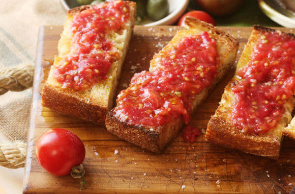
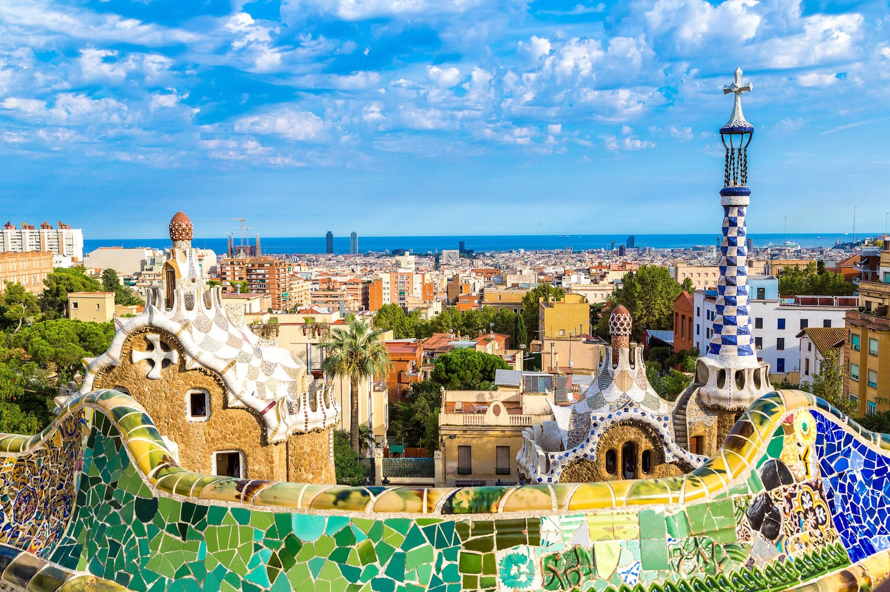
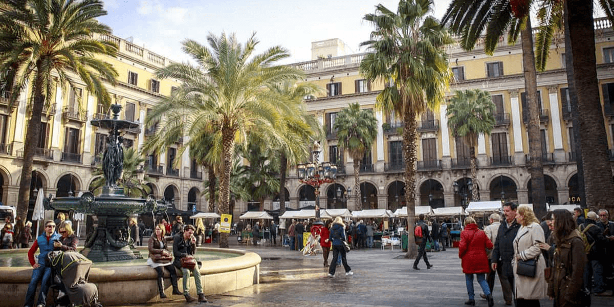

Визначні пам'ятки
Храм Саграда Фамілія, парк Ґуель і бульвар Ла-Рамбла знайомлять із найвідомішими образами міста.

Кухня та гастрономія
Тапас, свіжі морепродукти й каталонські десерти дають змогу скуштувати місцеву кухню.

Культура та традиції
Архітектура Антоніо Ґауді, каталонська мова та місцеві свята створюють виразний культурний характер Барселони.

Особисті історії
У пам'яті залишилася прогулянка від старого міста до набережної, де вечірнє сонце торкається моря.
